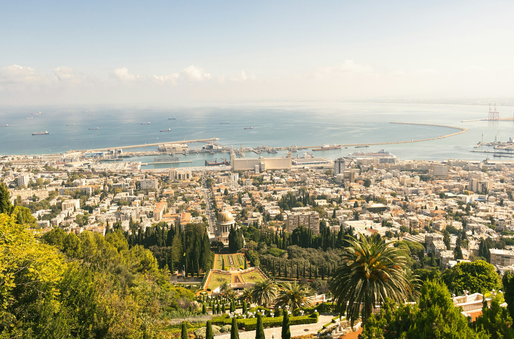
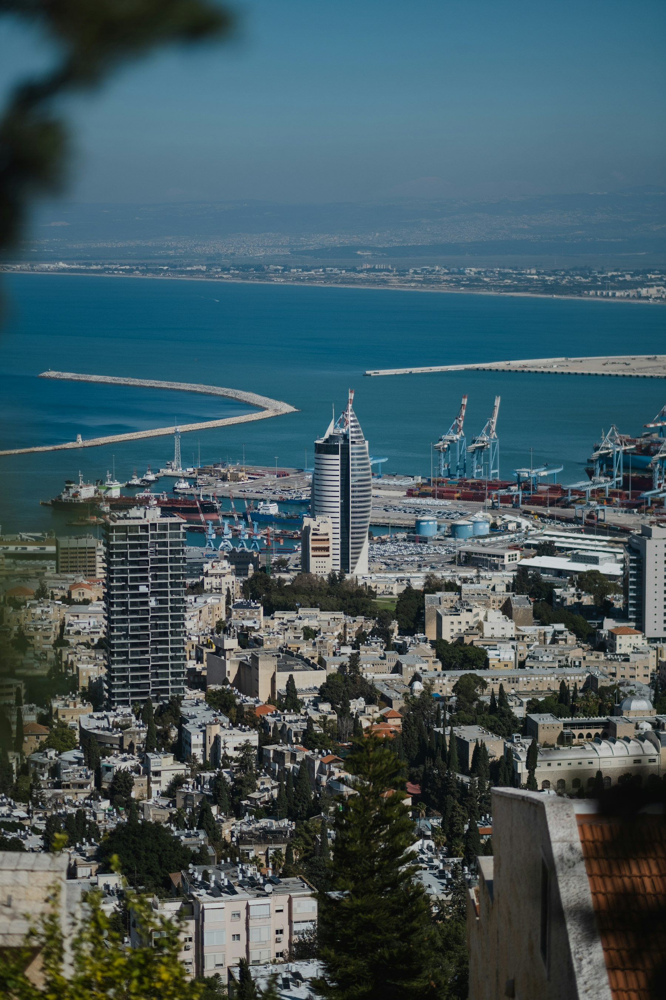

שכונות בחיפה
טווחי המחירים מבוססים על עסקאות מהשנה האחרונה, ומשתנים מרחוב לרחוב.

מרכז הכרמל
₪2.6–3.4 מיליון ל-4 חדרים
הטיילת ביפה נוף, הכרמלית ובתי הקפה של שדרות הנשיא. הנוף כאן הוא המפרץ כולו.
- תחבורה
- כרמלית, מטרונית
- מתאים ל
- זוגות, פנסיונרים, נוף

המושבה הגרמנית
₪2.1–2.8 מיליון ל-3 חדרים
בתי אבן לשימור לאורך שדרה אחת שעולה אל הגנים הבהאיים. מעט מאוד דירות למכירה.
- תחבורה
- מטרונית, רכבת
- מתאים ל
- אוהבי עיר והיסטוריה

הדר והעיר התחתית
₪1.1–1.5 מיליון ל-3 חדרים
בנייני באוהאוס, שווקים והתחדשות עירונית. המחירים הנגישים בעיר ושוק שכירות חזק.
- תחבורה
- כרמלית, רכבת
- מתאים ל
- משקיעים, צעירים

בת גלים
₪1.6–2.3 מיליון ל-3 חדרים
שכונה על המים, עם טיילת, רכבל ותחנת רכבת. דירות בשורה הראשונה נמכרות מהר.
- תחבורה
- רכבת, רכבל
- מתאים ל
- אוהבי ים

אחוזה ודניה
₪3.4–4.2 מיליון ל-5 חדרים
השכונות הגבוהות של הכרמל: בתים פרטיים, דירות גדולות ובתי ספר טובים.
- תחבורה
- אוטובוסים, כביש מוריה
- מתאים ל
- משפחות